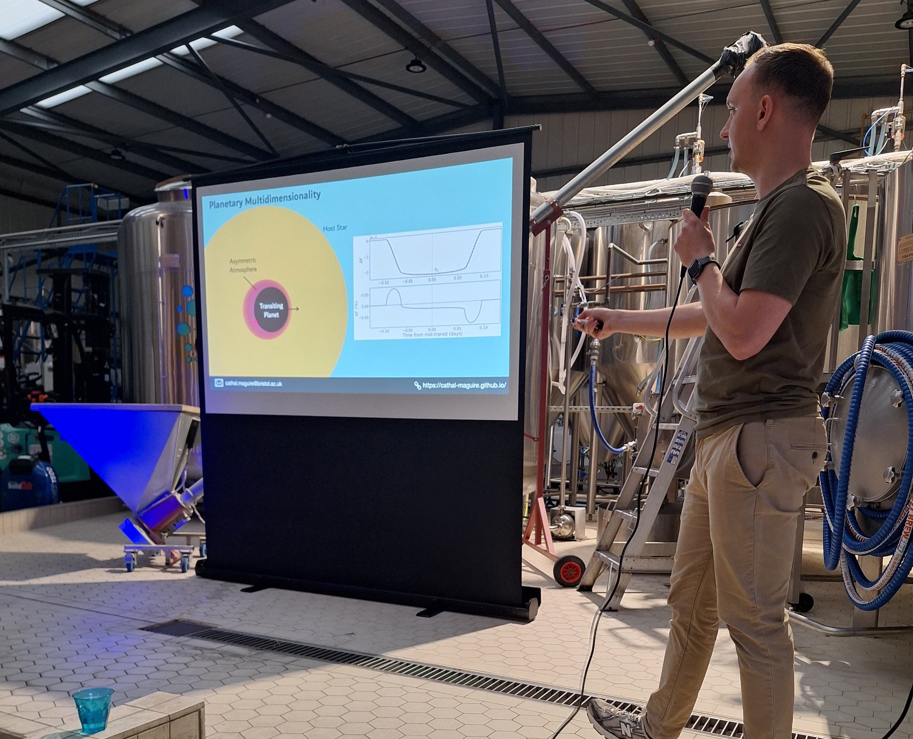

Outreach
I frequently engage in seminars or public engagement talks about my research, as well as other related interests of mine. Feel free to reach out if you are hosting any outreach events!
Limb from Limb: Observing Atmospheric Asymmetries from the Ground and Space
BOWIE+ Seminar Series, April 2026
In the talk below I give an overview of how we observe limb asymmetries (i.e., independent transit depth measurements of a planet's leading and trailing limbs) using both ground-based high-resolution spectroscopy and space-based low-resolution spectroscopy. I highlight both observing methods with two case studies; WASP-76b with VLT/ESPRESSO and HD 209458 b with JWST/NIRCam.
Observing the 3D-ness of Exoplanet Atmospheres
Pint of Science, Bristol, May 2026
I gave a talk as part of Pint of Science in The Left Handed Giant Taproom in Bristol. In this talk I introduced the study of exoplanets and their atmospheres, before highlighting recent techniques that probe the multidimensional structure of these atmospheres.

Exoplanet Atmospheres
Astronomy Ireland, November 2025
I gave a talk an introductory talk via Zoom on the history of exoplanets, from their postulation in Ancient Greece to their discovery in the 1990s, as part of the Astronomy Ireland Public Lectures. I then spoke about how and why we study their atmospheres.